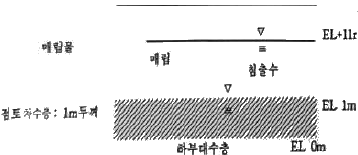
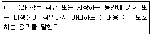
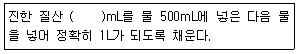
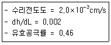
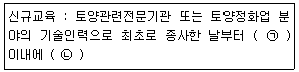
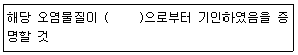
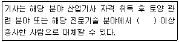
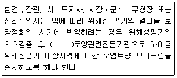
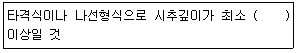

토양환경기사 (2019-04-27 기출문제)
1과목: 토양학개론
1. 주유소에 대한 사전오염예방대책과 정화대책을 순서대로 나열한 것은?
- 방조벽 시설-고형화 안정화기술
- 이중벽시설-중화제를 이용한 화학적 처리기술
- 추출시설-저온 열탈착
- 부식산화 방지지설-토양증기추출법
(정답률: 46%)

2. 유기오염물질의 특성을 좌우하는 인자로 가장 거리가 먼 것은?
- 증기압
- 착염물질 형성도
- 헨리상수(공기/물 분배계수)
- 옥탄올/물 분배계수
(정답률: 71%)
3. 토양에서 염기포화도(%)의 식으로 옳은 것은?
- (포화성염기총량/교환성염기용량)×100
- (교환성염기총량/포화성염기용량)×100
- (교환성염기총량/음이온교환용량)×100
- (교환성염기총량/양이온교환용량)×100
(정답률: 79%)
4. 토양 컬럼실험결과 물의 수리전도도가 7m/day이었다. 동일한 조건의 컬럼에서 기름이 통과될 경우의 수리전도도(m/day)는? (단, 물의 동점도 : 1.8×10-3kg/mㆍs, 물의 밀도 : 1000kg/m3, 기름의 동점도 : 0.⑤kg/mㆍs, 기름의 밀도 : 625kg/m3)
- 약 0.08
- 약 0.16
- 약 0.32
- 약 0.64
(정답률: 35%)
5. 공동대사작용(cometabolism)으로 호기성환경에서 트리클로로에틸렌을 분해시킬 때 이용되는 화합물로 가장 적절한 것은?
- 염소
- 톨루엔
- 할로겐 화합물
- 과산화수소
(정답률: 52%)
6. 우리나라 토양의 일반적인 특징에 관한 내용으로 가장 거리가 먼 것은?
- 사질(모래)토양
- 낮은 유기물함량
- 중성토양
- 낮은 염기치환용량
(정답률: 79%)
7. 물에 포화된 토양컬럼(water saturated soil column) 입구에 4가지 물질을 동시에 주입하고 출구에서 4가지 물질의 농도를 분석하였다. 출구에서 가장 먼저 검출되는 물질은?
- 염소이온(Chloride)
- 사염화탄소(Carnbon tetrachloride)
- 트리클로로에틸렌(Trichloroethylene)
- 테트라클로에틸렌(Tetrachloroethylene)
(정답률: 75%)
8. 대표적인 점토광물인 kaolinite에 관한 설명으로 옳지 않은 것은?
- 규소사면체층과 알루미늄팔면체층이 1:1로 결합된 광물이다.
- 우리나라 토양의 대표적 점토광물이다.
- kaolinite함량이 높은 토양은 통수 및 통기성이 좋다.
- kaolinite 광물에서 동형치환이 주로 일어난다.
(정답률: 65%)
9. 토양수의 이동에 대한 내용과 가장 거리가 먼 것은?
- 중력에 의한 이동
- 표면장력에 의한 이동
- 수증기에 의한 이동 및 증발
- 토양입자의 인력에 의한 이동
(정답률: 59%)
10. 유기물 60mmol이 미생물 활성에 의하여 12시간 후 40mmol이 되었다면 반응속도상수(hr-1)는? (단, 1차 반응 기준)
- 0.013
- 0.033
- 0.⑤3
- 0.073
(정답률: 73%)
11. 가축분뇨나 두엄 등이 유입된 지하수를 음용할 경우 주로 어린아이들에게 청색증을 일으키는 물질은?
- 인산염
- 황산염
- 질산염
- 염화염
(정답률: 75%)
12. 토양 중 유기물의 부식화과정에 가장 크게 영향을 미치는 요인은?
- 지형경사도
- 유기물에 함유된 탄소와 질소함량
- 토양의 수소이온농도
- 토양광물의 모재
(정답률: 67%)
13. 토양 교질에 가장 강하게 결합될 수 있는 양이온은?
- calcium
- aluminum
- sodium
- magnesium
(정답률: 49%)
14. 유류에 의해 오염된 지하수환경에서 자연저감이 일어나고 있다. 오염운 중심에서 질산염의 농도와 배경수질 농도가 각각 35mg/L와 5mg/L일 때 질산염에 의한 생분해능(EAC, mg/L)은?
- 6.3
- 10
- 16.5
- 31
(정답률: 29%)
15. 모암의 풍화에 의해 생성된 토양은 물리화학 생물학적 변화를 거쳐 성숙되면서 지표면에 평형층을 형성한다. 토양단면의 형성과정에 대한 설명으로 가장 거리가 먼 것은?
- 변형작용 : 풍화, 유기물 분해와 같이 토양성분의 분해와 결합과정
- 이동작용 : 유기 및 무기물질이 물과 유기물에 의해 상하로 이동하는 과정
- 첨가작용 : 토양에 새로운 식생이 발현하는 작용이다.
- 제거작용 : 지하수에 의해 토양성분이 용출되는 작용
(정답률: 69%)
16. 그림과 같이 매립지 저면은 두께가 1m인 점토차수층(Ilner) 으로 되어 있다. 침출수의 평균수두가 해발표고 11m이고, 점토차수층 하부에 분포된 대수층의 평균수두가 해발 1m이며 점토층의 유효 공극률은 0.2, 수직투수계수는 10-7cm/sec일 때 침출수가 점토차수층을 통과하는데 소요되는 시간(day)은? (단, 침출수는 점토 차수층과 반응을 하지 않는다고 가정)

- 약 132
- 약 231
- 약 552
- 약 1034
(정답률: 52%)
17. DNAPL(Dense Non Aqueous Phase Liquids)인 것은?
- 가솔린
- 식용유
- 벤젠
- 클로로벤젠
(정답률: 63%)
18. 토양의 pH가 증가할 때 음이온치환용량의 변화는?
- 증가
- 감소
- 증가후 감소
- 감소후 증가
(정답률: 70%)
19. 토양을 구성하는 모암 중 퇴적암에 속하지 않는 암석은?
- 사암
- 혈암
- 반려암
- 석회암
(정답률: 58%)
20. 토양의 양이온치환용량에 대해서 틀린 것은?
- 확산이중층 내부의 양이온과 유리양이온이 서로 위치를 바꾸는 현상을 양이온치환이라하며 이의 크기를 양이온치환용이라 한다.
- 일정량의 토양 또는 교질물이 가지고 있는 치환성야잉온의 총량을 당량으로 표시한 것이며, 보통 토양이나 교질물 100g이 보유하는 치환성양이온의 총량을 mg당량으로 나타낸다.
- 토양이나 교질물 100g이 보유하고 있는 양전하와 음전하의 수의 합과 같다.
- 일반적으로 pH가 증가할수록 토양의 양이온치환용량은 증가하게 된다.
(정답률: 52%)
2과목: 토양 및 지하수 오염조사기술
21. 다음 표준액 중 pH가 가장 높은 것은? (단, 0℃ 기준)
- 붕산염 표준액
- 프탈산염 표준액
- 인산염 표준액
- 수산염 표준액
(정답률: 55%)
22. 용기에 관한 설명으로 ()에 알맞은 것은?

- 밀폐용기
- 기밀용기
- 밀봉용기
- 차단용기
(정답률: 50%)
23. 크로마토그래피를 사용한 정량법 중에서 시료전처리, 시약 취급, 시료 주입 등에서 발생할 수 있는 오차를 최소화시키기 위해 사용하는 방법은?
- 외부표준법
- 표준물질첨가법
- 외삽법
- 내부표준법
(정답률: 63%)
24. 토양시료 채취방법에 관한 설명으로 가장 적합한 것은?
- 시안, 석유계 총탄화수소 등 시험용 시료는 농경지의 경우에는 중심이 되는 1개 지점과 주변 4 방위의 1~3m 거리에 있는 1개지점씩 총 5개 지점을 선정한다.
- 토양시료채취기가 없을 경우에 유기물질을 조사할 때에는 플라스틱 재질을 사용하고, 중금속의 경우에는 스테인리스 강 재질의 모종삽 또는 삽 등과 같은 기구가 적합하다.
- 공장지역ㆍ매립지역 등 농경지가 아닌 기타지역의 경우는 대상지역의 중심이 되는 1개 지점과 주변 4 방위의 5~10m 거리에 있는 1개 지점과 주변 4 방위의 5~10m거리에 있는 1개 지점씩 총 5개 지점을 선정한다.
- 채취한 토양시료 중 나머지는 입구가 넓은 500mL이상 용량의 플라스틱병에 가득 담고 마개로 막아 밀봉한 후 냉동상태로 실험실로 운반하여 수분보정용 시료로 사용한다.
(정답률: 66%)
25. 기체크로마토그래피를 이용하여 PCBs를 분석할 때 간섭물질에 관한 내용으로 틀린 것은?
- 고순도의 시약이나 용매를 사용하여 방해물질을 최소화하여야 한다.
- 초자류는 사용 전에 아세톤, 분석 용매 순으로 각각 3회 세정한 후 건조시킨 것을 사용하여 오염을 최소화할 수 있다.
- 전자포착검출기를 사용하여 PCB를 측정할 때 프탈레이트가 방해할 수 있는데 이는 플라스틱 용기를 사용하지 않음으로서 최소화할 수 있다.
- 플로리실 컬럼 정제는 산, 염화페놀, 폴리클로로페녹시페놀 등의 극성화합물을 제거하기 위하여 수행하며, 사용 전에 정제하고 활성화시켜야 한다.
(정답률: 53%)
26. 다음 중 농도가 가장 낮은 것은? (단, 비중은 1.0 기준)
- 0.01ppm
- 1mg/L
- 100ppb
- 1mg/kg
(정답률: 78%)
27. 저비점 석유류 중에 다량 함유되어 있는 BTEX의 측정에 적용하는 기체크로마토그래피 검출기의 종류가 아닌 것은?
- FID
- PID
- ECD
- GC/MS
(정답률: 53%)
28. 토양 중 수분함량 측정에 관한 설명으로 옳지 않은 것은?
- 토양 중 수분을 0.01%까지 측정한다.
- 돌, 나무 등 눈에 보이는 협잡물 등은 제거한 후 시험해야 한다.
- 시료를 1⑤~110℃의 건조 안에서 4시간 이상 항량이 될 때까지 건조한다.
- 채취된 시료는 24시간 이내에 증발 처리하여야 한다.
(정답률: 75%)
29. 토양 중 불소(자외선/가시선 분광법) 측정에 관한 설명으로 옳지 않은 것은?
- 불소가 진홍색의 지르코니움-발색시약과의 반응으로 무색의 음이온복합체를 형성하는 과정을 이용한다.
- 다량의 염소이온이 함유되어 있으면 염화주석용액으로 염소를 제거한다.
- 토양 중 정량한계는 10mg/kg이다.
- 불소이온과 지르코니움 이온 사이의 반응속도는 반응혼합물의 산도에 따라 달라진다.
(정답률: 53%)
30. 검량선에서 얻어진 경유성분의 검출량이 3⑤.5ng일 때, 토양 중 TPH(석유계총탄화수소)농도(mg/kg)는? (단, 수분보정한 토양무게=20.5g. 용매의 최종액량=2mL, 검액의 주입량은 2μL로 희석하지 않았다.)
- 20.5
- 18.7
- 14.9
- 12.6
(정답률: 49%)
31. pH 4인 수용액의 수소이온 농도는?
- 0.001
- 0.004
- 0.0001
- 0.0004
(정답률: 70%)
32. 토양 중 금속류의 함량분석을 위해 묽은질산(1+3)을 제조하는 방법으로 ()에 알맞은 것은?

- 150
- 250
- 300
- 350
(정답률: 66%)
33. ICP-AES를 구성하는 요소와 가장 거리가 먼 것은?
- 고주파전원부
- 시료도입부
- 분광부
- 시료원자화부
(정답률: 42%)
34. 흡광광도법에서 투과도가 0.4일 때 흡광도는?
- 약 0.2
- 약 0.4
- 약 0.6
- 약 0.8
(정답률: 67%)
35. 이온전극법을 이용하여 측정하기에 가장 적합한 항목은?
- 불소
- 아연
- 트리클로로에틸렌
- 폴리클로리네이티드비페닐
(정답률: 65%)
36. 유도결합플라즈마 발광광도계에 대한 설명으로 틀린 것은?
- 아르곤을 플라즈마 가스로 이용한다.
- 동시에 다성분의 분석은 불가능하다.
- 분석 성분의 농도는 방출되는 광선의 세기에 비례한다.
- 여기된 원자가 바닥상태로 이동할 때 방출하는 광선을 이용하여 측정한다.
(정답률: 73%)
37. 저장물질이 없는 누출검사대상시설-가압시험법의 검사기기 및 기구에 대한 설명으로 틀린 것은?
- 사용가스:불활성가스를 가압매체로 사용
- 온도계:시험압력에 충분히 견딜 수 있는 것으로서 최소눈금이 1℃ 이하를 읽고 기록이 가능한 온도계
- 가압장치:가압 시 최대 압력 100mmH2O이하가 되도록 조정되는 것
- 압력계:최소눈금이 시험합력의 5% 이내
(정답률: 70%)
38. 토양오염물질 위해성평가의 내용과 가장 거리가 먼 것은?
- 노출평가
- 영향평가
- 독성평가
- 위해도 결정
(정답률: 58%)
39. 석유계총탄화수소를 분석하기 위한 추출방법으로 옳은 것은? (단, 기체크로마토그래피 기준)
- 가온추출법
- 자기장추출법
- 적외선추출법
- 초음파추출법
(정답률: 64%)
40. 저장물질이 있는 누출검사대상시설-기상부의 시험법 중 미감압법 측정방법의 설명으로 옳지 않은 것은?
- 시험을 위한 진공속도는 매분 100mmHg 미만이 되도록 한다.
- 매 5분마다 측정된 압력변화값은 자동으로 기록되도록 한다.
- 누출여부에 대한 추가확인을 위하여 마이크로폰 등 추가적인 도구를 사용할 수 있다.
- 압력 안정화 유지시간 이후부터 매 5분마다 60분 또는 70분 동안의 압력변화를 측정한다.
(정답률: 59%)
3과목: 토양 및 지하수 오염정화 기술
41. 일반적인 토양세척법(soil washing)의 영향인자로 가장 거리가 먼 것은?
- 입경분포
- 토양투수계수
- 유기물 함량
- 수분함량
(정답률: 26%)
42. 대수층의 두께가 평균 100m이고 공극률이 0.3인 자유면 대수층에서 2000m3/day의 양수량으로 5년간 장기적으로 취수할 경우 관전관통상의 취수정 보호를 위한 고정반경(m)은?
- 173.5
- 196.8
- 2⑤.4
- 302.4
(정답률: 36%)
43. 바이오필터의 운전에 따른 문제점으로 틀린 것은?
- 생물학적 처리와 물리학적 처리의 동시진행을 위한 별도의 포집가스 처리시설이 필요하다.
- 생물상의 온도가 미생물의 활동에 의해 상승함에 따라 유입가스에 비해 유출가스 중의 수분함량이 증가하여 수분증발이 일어나 주기적인 수분공급이 필요하다.
- 시간이 지남에 따라 충전층이 압밀되어 바이오필터를 통과하는 배가스의 압력손실이 점차 커진다.
- 오염물질 분해반응에 따라 pH가 낮아지는 현상이 발생한다.
(정답률: 49%)
44. 매립지에서 염소의 농도가 1000mg/L인 침출수가 누출되어 다음과 같은 특성을 지닌 대수층으로 유입되고 있다. 다음 조건을 이용하여 산출된 평균선형유속(m/s)은?

- 8.7×10-8
- 5.3×10-8
- 3.6×10-8
- 2.8×10-8
(정답률: 62%)
45. 열탈착기술 적용 시 2차 오염물질의 발생을 제어하는 기본적 장치에 대한 설명으로 틀린 것은?
- 조대입자는 먼저 사이클론으로 제거한다.
- 미세입자는 백필터나 전기집진기를 설치하여 제거한다.
- 잔존 유기물 제거는 벤투리 세정기를 이용한다.
- 페기물 중에 황, 시안 등이 있을 경우 세정장치가 필요하다.
(정답률: 49%)
46. 생물학적 처리 시 일반적으로 난분해성을 가지는 대상 오염 물질이 아닌 것은?
- 할로겐화된 화합물
- 가지구조가 많은 화합물
- 물에 대한 용해도가 낮은 화합물
- 원자의 전하차가 작은 화합물
(정답률: 78%)
47. Composting 공법에 대해 설명한 내용으로 틀린 것은?
- 퇴비화과정에서 공기가 적게 공급되면 pH가 7~8로 증가한다.
- 보통 초기 제어 함수율은 40~60%이다.
- 퇴비화 시 심한 악취가 나는 것은 산소부족에 기인된 것이다.
- 적정 영양물질의 비율은 C/N비로 25~30:1이다.
(정답률: 49%)
48. 오염토양 내에 인위적으로 산소를 공급하여 토양 내에 존재하는 토착 미생물의 활성을 촉진시켜 생분해도를 극대화하여 오염토양을 정화하는 기법은?
- 공기분사기법(air sparging)
- 토양증기추출기법(soil vapor extraction)
- 토양세척(soil washing)
- 바이오벤팅기법(biovnting)
(정답률: 68%)
49. 미국의 Superfund site 중에서 유해성 중금속으로 오염된 토양을 정화하는 데 가장 많이 이용되며, 폐기물의 유해성분의 유동성을 감소시키는 것을 목적으로 처리하는 기술은?
- 토양증기추출법
- 토양세척법
- 고형화/안정화
- 열탈착
(정답률: 76%)
50. 토양정화 방법 중 열탈착기술의 특징이 아닌 것은?
- 자온 열처리 기술이다.
- 다양한 수분함량과 오염농도를 가진 여러 종류의 토양에 적용이 가능하다.
- 토양으로부터 휘발성 유기화합물을 검출한계 이하로 제거가 가능하다.
- 다이옥신(dioxin) 및 푸란(furan)을 생성시키는 단점이 있다.
(정답률: 70%)
51. 수직차단벽으로서의 슬러리월(slurry walls)의 역할이 아닌 것은?
- 오염물질의 분해 또는 지체 효과를 증진시킨다.
- 오염물질을 고형화하여 용출률을 낮춘다.
- 지하로의 침출수 흐름을 제어한다.
- 오염되지 않은 지하수를 오염된 지역으로부터 격리시킨다.
(정답률: 56%)
52. 토양경작법 운용 시 고려해야 할 토양 조건 중 가장 거리가 먼 것은?
- 수분함량
- 온도
- 산화환원전위
- 제타포텐셜
(정답률: 61%)
53. 생물학적 통기법을 효과적으로 적용하기 위해서는 현장에서의 산소소모율을 조사한다. 평균산소 소모율(% O2/day)을 구하는 식의 인자와 가장 거리가 먼 것은?
- 주입공기 유량
- 배가스 중의 산소농도
- 토양 체적
- 토양 투수계수
(정답률: 65%)
54. 오염지하수의 생물학적 처리에 대한 설명으로 틀린 것은?
- 생물학적 처리 전후에 물리화학적 처리를 병행하는 경우가 있다.
- 생물학적 처리방식은 부유상 처리방법과 고정상 처리방법으로 구분할 수 있다.
- 일반적으로 염소로 치환된 지방족화합물의 분해율이 방향족화합물보다 수십배 이상 빠르다.
- 생물학적 처리의 운전방식은 연속식, 회분식, 반회분식으로 구분할 수 있다.
(정답률: 57%)
55. 열탈착법에 관한 설명으로 틀린 것은?
- 가소성이 낮은 토양은 스크린 및 장비에 영겨 붙어 운영에 지장을 초래할 수 있다.
- 20%이상 수분을 포함하는 토양은 건조 및 탈수 후 처리하여야 한다.
- 1100kcal/kg 보다 높은 열량을 가진 토양은 처리 전 일반토양과 섞어 처리하여야 한다.
- 저온 열찰탁조는 90~320℃ 범위에서 운영된다.
(정답률: 58%)
56. 유기오염물질로 오염된 사질 대수층이 있다. 수리전도도가 3.0×10-3cm, 유효 공극률이 0.3, 수두구배가 0.01일 때 오염운의 평균 이동속도(cm/sec)는? (단, 흡착 등에 의한 지연은 고려하지 않는다.)
- 10-3
- 10-4
- 10-5
- 1--6
(정답률: 57%)
57. 벤젠(C6H6) 40kg으로 오염된 토양을 원위치 생물학적 복원기술로 정화하고자 한다. 벤젠이 완전분해되는 데 필요한 산소를 과산화수소로 공급한다면 필요한 과산화수소의 양(kg)은? (단, 2H2O2→2H2O+O2)
- 143
- 184
- 226
- 262
(정답률: 46%)
58. 열처리기법의 일종으로 4000℃ 고온에서 이온화된 가스를 이용하여 오염토양을 마그마와 같이 용융시켜 유리화 시키는 기법은?
- 전기저항가열기법
- 무선주파수기법
- 플라즈마기법
- 전기스팀기법
(정답률: 77%)
59. 토양증기추출법으로 유류오염 토양을 정화하는 현장의 모니터링 항목 중에 온전초기에 매일 측정해야 하는 항목이 아닌 것은?
- 흡입 공기량
- 휘발성 유기화합물질 농도
- 처리대상 물질 농도
- 관정 내 압력
(정답률: 60%)
60. 오염토양 처리기술 중 채광공정과 폐수처리공정을 응용한 처리기술은?
- 토양증기추출법
- 토양경작법
- 토양세척법
- 저온열탈착법
(정답률: 64%)
4과목: 토양 및 지하수 환경관계법규
61. 다음 오염물질 중 토양오염우려기준이 나머지와 다른 것은? (단, 1지역 기준)
- 카드뮴
- 페놀
- 수은
- 납
(정답률: 49%)
62. 시료의 채취 및 분석을 통한 토양오염의 정도와 범위를 조사하는 토양환경평가 조사단계(순서)는?
- 개황 조사
- 기초 조사
- 정밀 조사
- 오염도 조사
(정답률: 60%)
63. 환경부장관이 토양보전을 위해 수립하는 토양보전기본계획의 수립 주기는?
- 3년
- 5년
- 10년
- 15년
(정답률: 74%)
64. 국립환경인력개발원장이 개설하는 토양환경관리의 교육과정에 관한 설명으로 ()에 알맞은 것은?

- ㉠ 6월, ㉡ 8시간
- ㉠ 1년, ㉡ 8시간
- ㉠ 6월, ㉡ 18시간
- ㉠ 1년, ㉡ 18시간
(정답률: 71%)
65. 자연적인 원인에 의한 토양오염임을 입증하기 위해 대통령령으로 정하는 방법으로 ()에 알맞은 것은?

- 대상 지역의 변성
- 대상 지역의 기후변동
- 대상 부지의 지각변동
- 대상 부지의 기반암
(정답률: 74%)
66. 토양관련 전문기관의 지정기준에 관한 내용으로 ()에 옳은 것은? (단, 토양오염조사기관, 기술인력 기준)

- 5년
- 4년
- 3년
- 2년
(정답률: 73%)
67. 오염토양개선사업을 지도ㆍ감독할 수 있도록 환경부령으로 정하는 토양관련 전문기관에 해당하는 것은?
- 국립환경과학원
- 시ㆍ도 보건환경연구원
- 지방 유역환경청
- 한국환경공단
(정답률: 69%)
68. 위해성평가 대상지역의 관리에 관한 내용으로 ()에 알맞은 것은?

- 매년
- 2년 마다
- 3년 마다
- 5년 마다
(정답률: 64%)
69. 토양정화업의 등록요건 중 장비기준으로 틀린 것은?
- 휴대용 가스측정장비 1식(휘발성유기화합물질, 산소, 이산화탄소 및 메탄의 측정이 가능할 것)
- 현장용 수질측정기 1식(수소이온농도, 수은, 전기전도도, 용존산소 및 산화환원전위의 측정이 가능할 것)
- 지하수위측정기
- 시료채취기 1대(깊이 2m 이내 시료채취가 가능할 것)
(정답률: 78%)
70. 토양환경평가기관의 지정기준 중 자가동력시추기에 관한 내용으로 ()에 옳은 것은?

- 2m
- 4m
- 6m
- 8m
(정답률: 78%)
71. 특정토양오염관리대상시설의 종류로 가장 거리가 먼 것은?
- 위험물의 제조 및 저장시설
- 송유관 시설
- 유해화학물질의 제조 및 저장시설
- 석유류의 제조 및 저장시설
(정답률: 64%)
72. 특정토양오염관리대상시설의 설치자는 토양오염 검사에 의하여 토양관련 전문기관으로부터 통보받은 토양오염 검사결과를 몇 년간 보존하여야 하는가?
- 1년
- 2년
- 3년
- 5년
(정답률: 34%)
73. 검사항목별 ‘1지역-2지역’ 토양오염대책기준(단위:mg/kg)이 잘못 짝지어진 것은?
- BTEX:80-20
- TPH:2000-2400
- TCE:24-24
- PCE:12-12
(정답률: 50%)
74. 특정토양오염관리대상시설의 변경신고 사유로 틀린 것은?
- 사업장의 명칭 또는 대표자가 변경되는 경우
- 특정토양오염관리대상시설의 조업이 정지되어나 일부 폐쇄하는 경우
- 특정토양오염관리대상시설을 교체하거나 토양오염방지시설을 변경하는 경우
- 특정토양오염관리대상시설에 저장하는 오염물질을 변경하는 경우
(정답률: 48%)
75. 지하수개발ㆍ이용시공업자의 영업 등록 취소 요건이 아닌 것은?
- 부정한 방법으로 등록을 한 경우
- 등록기준에 미치지 못하게 된 경우
- 계속해서 1년 이상 영업을 하지 아니한 경우
- 고의 또는 중대한 과실로 지하수개발ㆍ이용시설의 공사를 부실하게 한 경우
(정답률: 73%)
76. 시ㆍ도지사가 상시측정, 토양오염실태조사 또는 토양정밀조사의 결과, 우려기준을 넘는 경우에 정화책임자에게 명할 수 있는 조치내용이 아닌 것은?
- 토양오염방지시설의 설치 또는 개선
- 오염토양의 정화
- 토양오염관리대상시설의 개선 또는 이전
- 해당 토양오염물질의 사용제한 또는 사용중지
(정답률: 21%)
77. 주민건강피해조사 및 대책의 내용에 포함될 사항으로 틀린 것은?
- 건강피해의 판정 및 대책
- 건강피해지역 통제계획
- 건강피해조사의 대상 및 방법
- 건강피해조사 기관
(정답률: 50%)
78. 지하수법 용어의 정의 중 틀린 것은?
- 지하수란 지하의 지층이나 암석 사이의 빈틈을 채우고 있거나 흐르는 물을 말한다.
- 지하수영향조사란 지하수의 개발ㆍ이용이 주변지역에 미치는 영향을 분석ㆍ예측하는 조사를 말한다.
- 지하수보전구역이란 지하수의 수량이나 수질을 보전하기 위하여 필요한 구역으로서 시ㆍ도지사에 의해 지정된 구역을 말한다.
- 지하수정화업이란 지하수에 함유도니 오염물질을 희석하지 않고 제거 또는 분해하여 지하수를 이용하는 사업을 말한다.
(정답률: 68%)
79. 지하수의 보전ㆍ관리를 위하여 필요한 경우에 지정하는 지하수보전구역이 아닌 것은?
- 지하수개발ㆍ이용량이 기본계획 또는 지역관리계획에서 정한 지하수개발 가능량에 비하여 현저하게 높다고 판단되는 지역
- 지하수의 지나친 개발ㆍ이용으로 인하여 지하수의 고갈현상, 지반침하 또는 하천이 마르는 현상이 발생하거나 발생할 우려가 있는 지역
- 지하수의 개발ㆍ이용으로 인하여 주변 생태계에 심각한 악영향을 미치거나 미칠 우려가 있는 지역
- 지하수의 개발ㆍ이용으로 인하여 상수원으로 이용하는 호소수가 줄어들 우려가 있는 지역
(정답률: 39%)
80. 오염토양을 버리거나 매립한 자에 대한 벌칙기준은?
- 6월 이하의 징역 또는 5백만원 이하의 벌금
- 1년 이하의 징역 또는 1천만원 이하의 벌금
- 2년 이하의 징역 또는 2천만원 이하의 벌금
- 3년 이하의 징역 또는 3천만원 이하의 벌금
(정답률: 40%)
따라서, 먼저 부식산화 방지지설을 설치하여 지하수 오염을 예방하고, 이후에 토양증기추출법을 이용하여 이미 발생한 지하수 오염물질을 정화하는 것이 가장 효과적인 방법이다.
이유는 부식산화 방지지설은 지하수와 연결된 연료 저장 탱크 등의 부식과 산화를 방지하여 지하수 오염을 예방하는 역할을 하며, 토양증기추출법은 이미 발생한 지하수 오염물질을 지하수와 함께 추출하여 정화하는 기술이기 때문이다.